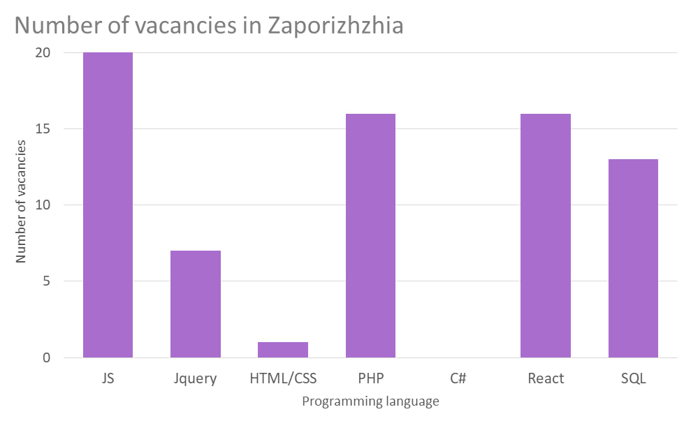

web-developer
A web developer is a specialist who creates new and maintains existing websites. Most often, a web developer works in a team with a designer, tester and manager. He can also work both on the appearance of the site and on its internal, server part. Testing, although not the main one, is also one of the tasks of web programming.
Online banks, social networks and marketplaces are also sites, only with a more complex structure and functionality. Because of this, they are called web applications, but these services are developed and supported by the same web developer.

History of the specialty

The history of the web developer profession is not so old and dates back to the 90s of the last century. Then the Internet was not so widespread - a graphical interface was required. In 1989, Tim Berners-Lee outlined his concept of a computer platform, which led to the emergence in 1990 hypertext markup language - HTML.
The first sites were not popular, so web developers were not in demand. However, the Internet, over time, began to appear in every home. It was at that moment that web developers began to be in demand. and site development technologies.
Now a web developer is one of the most sought-after professions in the world. This is due to several reasons. Firstly, today every second person has access to the Internet and therefore it is very important to satisfy everyone. Secondly, the Internet industry is at the peak of its popularity and until there is a replacement for it. And thirdly, there are very few experienced web developers and therefore they are mostly in large corporations.
НDirections in web development
There are three directions in web development:- Backend-developer — a specialist who works with the internal parts of the site: he writes code in different languages, is responsible for the smooth operation of the site, the organization of technical processes and the database. The back-end developer uses the following tools: different programming languages (PHP, Perl, Java, Python, Ruby), frameworks (Kohana, Codeigniter, Yii), and MySQL to save data.
- Frontend-developer — specialist who works on the visual side of the site. He translates the design project into code, so that the external side of the site will function correctly and images will be displayed everywhere correctly. His main tools - CSS, HTML, JavaScript. This list is complemented by a whole list of other programs designed to improve the site: Bootstrap, jQuery, AngularJS, LESS, Sass/SCSS, etc.
- Fullstack-developer — a professional who knows how to perform the tasks of a backend and frontend developer. Such masters are quite few, because it is very difficult to master the whole range of knowledge.
Skills and Abilities front-end developer
- soft skills
- Creativity
- Ability to persuade
- Ability to work in a team
- Adaptability
- Time management
- hard skills
- Ability to write clear code
- Math knowledge
- Ability to search for information in search engines
- Solid knowledge of standard libraries, required frameworks and tools
- Knowledge of several programming languages
Popular languages and technologies for frontend development
Today there are many programming languages and their derivatives, but there are languages that are more in demand for other
- HTML - an acronym for Hypertext Markup Language, is a programming language for creating electronic documents called pages placed on the Internet. Each page has multiple connections to hyperlinks or links to other pages.
- CSS - is a programming language used to describe how documents should look in terms of layout and style. A document usually refers to a text file structure that uses a markup language, such as the widely used HTML and others like XML or SVG.
- React - is a programming language developed by Facebook to create fast and advanced web user interfaces. It is currently one of the most widely used JavaScript libraries for creating web interfaces. The React programming language is suitable for creating visual user interfaces and data visualization for browsers.
- JavaScript - is a popular programming language that allows users to implement complex functions on web pages.It can be triggered anytime a page performs dynamic action, such as showing periodic content updates, animated 2D and 3D graphics, interactive maps, video inserts, and more.
- PHP - is a universal programming language that is easy to use. It works well with a large number of databases and operating systems. Modern frameworks, a massive code base and an active PHP community are all factors that ensure the continuous evolution of PHP.
Pluses and minuses of the profession

-
Advantages
- 1. Irreplaceable Professionals
- 2. High standard of living
- 3. A bridgehead for development
- 4. Profession of the future
- 5. The opportunity to become a specialist at a young age
-
disadvantages
- 1. Sitting work
- 2. Constant learning
How much web developers make?
Indeed, Payscale, Glassdoor cite dramatically different figures of the average salary of developers of different specializations and employment levels in the U.S. market. The amount ranges from $44 to $75 thousand (in Ukraine from 15k UAH to 50k UAH). Statista data show a direct correlation between salary level and location.
Specialist levels:- Junior - a novice programmer who knows basic things and understands the principles of his tool. Even if you have only recently begun to learn programming, you can already qualify for the title of june - in the worst case, it will be a job as an intern, which is not bad to start with.
- Middle - is the developer understands his area of responsibility and is able to make his own decisions on the implementation within his competence. He does not need to spell out the task, give a detailed decomposition. And he understands the work processes within the company.
- Senior - is the highlight of the program, able to take on a project and even lead a separate department. Senior Developer has a wide range of knowledge, is able to become a mentor for Trainee or Junior Developer, as well as to improve the efficiency of the team by implementing his ideas.
Perspectives on the profession

-
Artificial Intelligence
The future of the whole world lies in “smart” technologies. This has been reflected in any field for several decades. Once physical strength began to be replaced by robots, the greatest minds began working towards the complete automation of our lives. In addition, in any web development, the graphic component is important. Watch the following short video for the latest trends and creative ideas. -
Active transition of business online
Today, many businesses are mastering the virtual environment to expand, but there are very few experienced specialists.